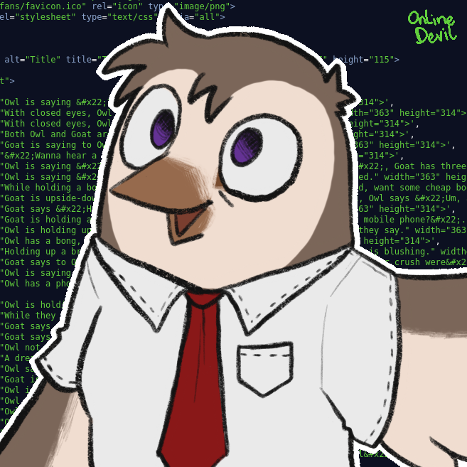
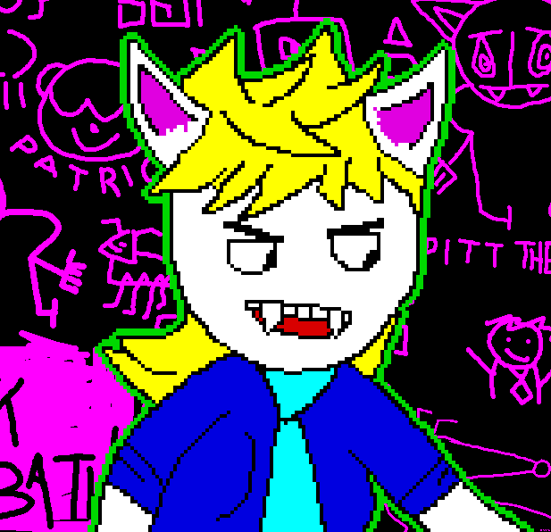

An anthro barm owl is seen smiling while she is in a white button-up shirt. She also has a red tie on with her wings open. The owl is smiling.
Artwork by Bruno A. and is not free to use, but was used here with written permission.
Cass The Owl is the main OC that I use to present myself to the world, she is an English barn owl who has a very simple design, the most being a red tie. As with a lot of the characters that I have made, I am okay with people having their own interpretation of how they think this character should look like, so in other words, if you want to draw Cass The Owl, you can change what they have on, for example, people have drawn Cass with a bowtie. Dress her how you think she should dress.
While I am okay with you dressing however you like if you want to draw her, try and aim to make her look like a barn owl in some way or another - saying that, you can throw this out if drawing this will be hard to do for you.
Despite this, in my lore for the owl, she is a barn owl. The way that I would draw her is with a red tie, breasts (yes, I know that owls lay eggs), and also have on a white/purple shirt. Again, I welcome any interpretation of my OCs, so this is more of a suggestion than anything.
It is also possible to draw Cass the Owl simply in ASCII art, as seen below;
{O,O}
/)_)
""

Pitt the bat. He is a white-skined anthro furry, having blond hair, blue eyes, round yellow glasses that are held up with tape, and he has on a sweater that is blue.
Artwork by Cass Python and is CC BY 4.0.
As heavily inspired by that of the ZX Spectrum and, perhaps unsurprisingly if you know me, was drawn as a failed attempt to draw Xenia, the Linux Fox, Pitt is the name of this anthro vampire who's only mission in life is to feed off of the living by drinking the blood of the cattle of unsuspecting farmers - he is the terror of the civil parish village of Suffolk, England.
Pitt is drawn with round glasses, a dark blue shirt, a blue tie and long blond hair. He also has on a pair of pink pants (trousers), as well as a red shirt. The inside of his ears are pink and he has grey and pink shoes. Pitt has painted his nails pink.
All of Pitt's skin is white, but he does have visible scars on his wrists and thighs. He is transmasc, so this would mean that he has breasts, I am not transmasc myself, but in lore, Pitt still has his breasts, so I guess if you want to draw him shirtless, giving him a binder would be the best.
As already started, Pitt was inspired by the ZX Spectrum, a computer that had a limited color pallet, and as such, Pitt's color are only in that pallet. The hex for it is seen below, you can also see the pallet here.
Some examples of Pitt are listed below:
Want to support OwlyFans? See our NFTs!
Copyright 2021 - by Cass «Owly» Python, licensed under the FOPL-MDP. Please see humans.html for full credit and thanks. Peace and love.
{kind=link}
{kind=link}
{kind=link}
{kind=link}